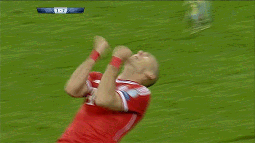
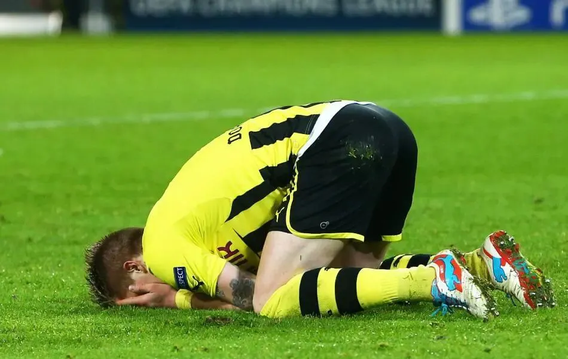
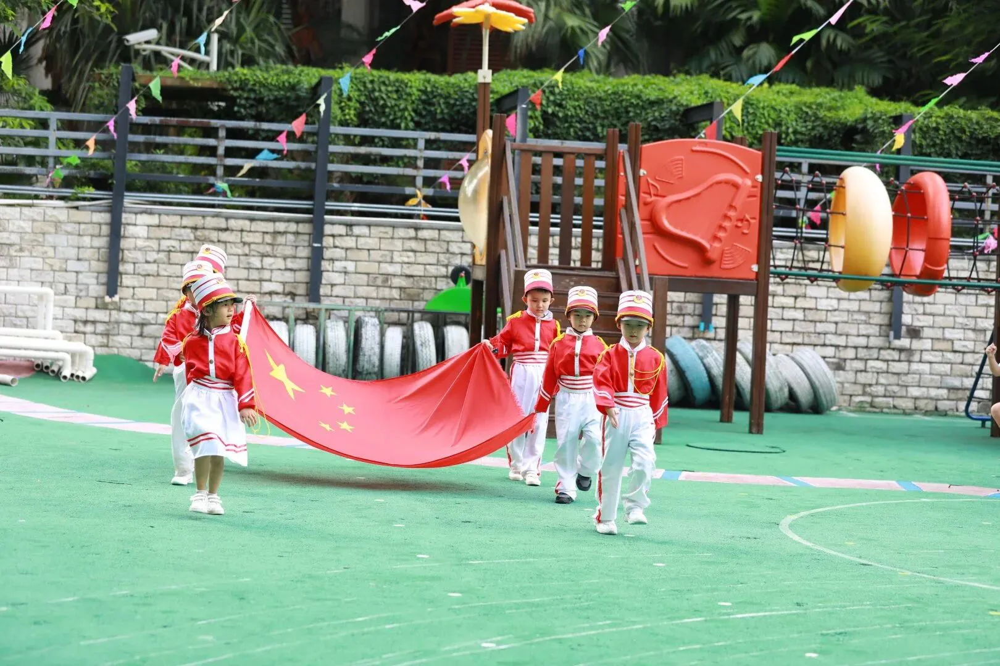

孖仔帮
公众号ID：twinsbang
关注
文|圆圈妈
网图|侵删
受疫情影响，阔别校园180天，圆圈兄弟终于又可以上学了！
当圆圈爸带着两只小巨兽走出家门，关上门的一刹那，我早已按耐不住内心的敲锣打鼓，立马从床上一跃而起，巴不得向全世界宣布：老娘又像个正常人一样，存活了！
接下来的日子…
终于安静睡到自然醒；
上厕所终于可以自由控制时间；
看抖音终于不用调静音；
吃零食终于不用躲厕所吃；
...
年初，我们仨待在圆圈外婆家躲疫情，有老人家帮忙带，地方大，随便玩，我没有感觉到带娃压力；5月，我们回到了深圳，为方便圆圈爸上班，又搬到了市区，一个只有35平米的小房子。
白天我们娘仨相看两厌，互相伤害，晚上他们父仨你侬我侬，互诉衷肠，我倒成了第四者。
反正我每天都拿李白的古诗词激励自己，天生我材必有用，按我的理解就是：老天让我生了对双胞胎，一定有他的原因，他日我必定会在哪个方面有点用途！
看，这就是用途。
以前经常听前辈妈妈说双胞胎三岁后，好带很多，几乎可以彻底放飞自我了，我每次都听得热血沸腾，兴奋不已，眼巴巴地盯着日历看，距离那天还有几时几分几秒。
可是现在，我只当前辈妈妈狗血剧看多了，也开始胡扯瞎掰了，反正我是再也不信了！
是的，他们会自己吃饭了，但是两个一样大的小男娃坐在一起吃饭，本身就是个巨大的BUG；他们会朝着对方扔饭粒，把不喜欢吃的菜夹给对方，遇到喜欢吃的菜会争出鱼死网破。
唯一的好处就是，一个先吃完了，另一个感觉有压力了，会快速地吃。
是的，他们终于丢掉吸管杯，会用杯子喝水了，然而，画面是这样的：两人会像宋江李逵结拜一样碰杯，水碰掉了三分之一，喝了三分之一，洒了三分之一，有时干脆不喝，互相往对方身上泼...
是的，他们会自己洗澡了，然而每次洗澡就是一年一度的泼水节，双胞胎的泼水节次数有点频繁，一天一次，甚至一天N次，具体看天气，看心情！
总之，我总结的经验就是给3岁以上的双胞胎洗澡，不求洗干净，只求别湿身。
哦对了，说个小插曲，每次小区楼栋管家过来抄水表，总是一脸同情地看着我：啧啧啧，养两个儿子，好烧钱啊！
是的，他们终于可以自主入睡了，不要抱睡，不用唱摇篮曲，只要给他们一张床，关上灯就行了。
然而，距离他们真正睡着其实还有三千尺瀑布那么长…
刚躺下，这个说要去嘘嘘，那个说要去喝水，这个说忘记抱抱，那个说要找泰迪说晚安….
实在想不出不睡觉的借口了，那就两人窃窃私语，讨论下今天的积木造型谁的比较酷，实在没话说了，那就干脆两人互打互踢下，干一场...
等到他们真的睡了，已经是凌晨12点了。
总之真相就是：双胞胎的晚睡问题，一点都不会比夜奶抱睡容易到哪里去。
是的，他们有伴儿一起玩，这真是件喜大普奔的事情，至少不用整天抱着他们走来走去，不用琢磨着怎么陪玩，不用纠结选什么早教教具，总之两人玩在一起就是纯天然，巨省钱，超环保..
然而，事物总有好坏两面。
俩人好的时候，山无棱天地合，乃敢与君绝...
不好的时候，楚河汉界拔地而起，你若犯我，必拔刀相向...
是的，他们可以专心玩会儿玩具了，但真的仅限于一会儿而已，上一秒，他们还在安静地画画，下一秒他们已经趴在地上玩乐高，可能我再转过身一看，他们又把桌上的画笔和纸张丢在地上，换上拼图。
最后的结局就是，走到哪里都是玩具，玩具，玩具，也许睡到半夜不小心摸到枕头底下还藏着变形金刚的残肢手臂。
更惨的是，当我勒令他们必须收拾玩具时，他们每次都会答应得好好的，可是，仅仅是“答应”而已，并不是“行动”，下一次玩具依然横尸遍野，还总是有各种正当和不正当的理由冒出来跟我杠。
果然，男人的嘴，骗人的鬼，
偏偏我还每次都信了！
是的，他们对妈妈的依恋感终于不那么强烈了，至少不用每天通过亲亲抱抱，哭哭闹闹来刷存在感，但不知道为什么小男娃的世界就是那么脆弱，那么敏感多疑。
有时训他们，稍微加强了点语气，哪怕音量只是递增了点，他们的小心脏就受不了，立马泪眼汪汪地向我求证：
妈妈你这么凶是不是不爱我了！
妈妈你不爱我，我会不开心的！
妈妈你为什么不爱我了，你不可以不爱我的！
我不敢相信，不能接受，不想承认，眼前这两个哭得梨花带雨的小男娃，明年就要上小学了。
我只能忍住内伤的表情，摸着良心一遍又一遍地给他们唱起张学友的歌《每天爱你多一些》。
唯一的安慰就是，感性的他们很喜欢把爱大声说出来，每晚睡觉前都要说好几遍：
妈妈我爱你，
妈妈我喜欢你，
妈妈你辛苦了，
妈妈晚安。
一直对全球气候变暖没什么感觉，现在我懂了：变暖的不仅仅是全球的气候，还有我们家的两只小暖男。
看到这，可能小月龄的双胞胎妈妈看了会觉得特别丧气，特么熬到5岁了还这么个德行，到底何时是个头啊，感觉看不到希望。
其实呢，也不必太悲观，双胞胎什么时候才好带，才让人省心，全看你怎么对待，与年龄无关。
每个阶段都有每个阶段的难处，这个坎熬过去了，孩子们总会制造出新的花样等着你，就好像打游击一样，闯完这个关，还有下一关。
养育双胞胎是个持久战，关键看为人父母的心态！
过去的180天宅家带俩娃，算是自他们出生以来，我第一次无作弊式，全闭卷地挑战一人带俩娃 ，意思是白天包吃包住包睡包陪，还有其他杂七杂八….全部一人搞定。
我是个没有耐性的人，如果一次性和孩子接触时间太长，我会很烦，更何况是两个经常尖叫打架的熊孩子，即便是亲生的，我也很难做到全心全意的陪伴。
此处必须煽情一下：特别感恩，以前有老人家帮忙带双胞胎，真的是感激涕零；对那些从双胞胎出生就开始1挑2 的妈妈肃然起敬，真的是顶礼膜拜。
自己经历过1挑2的那种窘迫和狼狈才知道，所有成年人的世界都没有容易二字，所有双胞胎妈妈的世界都是大风大浪，枪林弹雨...
最后，给大家分享一段圆圈开学时的小插曲，与我一起来见证下养育双胞胎的那些小感动：双胞胎长大后，偶然的某个瞬间总会不经意间变成一个催泪弹，让你喜极而泣，幸福得一塌糊涂！
开学日当天，圈圈担任升旗仪式的小小主持人，圆圆也当选小小升旗手，我趴在幼儿园的栏杆外面看他们表演。
看到威风凛凛的圆圆，穿着旗手礼服，有模有样地举着国旗，大踏步地走来；
看到圈圈，小小的身影，拿着麦克风，站在混乱嘈杂的人群中，临危不惧，一字不落地把台词念完。
顿时老泪纵横！
旁边一位妈妈以为我想娃了，安慰我说，刚入园是这样的了，过段时间就好了。
我摇头微笑，跟想娃无关，只是被这两只突然长大的儿子们感动哭了。
记得5年前，他们只是两只软糯糯的小肉团，怎么突然就长大了，还如此英姿飒爽地站在我眼前。
我滴妈呀，我太有成就感了！
以前看到电视剧里的妈妈看到儿子上台演出得奖时捂嘴哭的画面，会觉得这电视演的太假了，这有啥好哭的。
现在懂了，这是妈妈为儿子感到骄傲的喜极而泣。
回到家坐在电脑前，家里一反常态的整洁和安静，让我很不习惯，鼻子酸酸的：其实不是他们离不开我，而是我离不开他们。
想来最轻松的大概就是幼儿园阶段了：不用操心屎尿屁，不必纠结语数外，这真是香飘飘的3年。
集美们，正在怀孕，正在喂奶，正在哄睡，正在陪玩的集美们，先订个小目标，把两只吞金兽丢进幼儿园，岁月静好地享受这3年吧！
-END-
今日互动话题
#双胞胎哪个阶段最好带？#
评论区聊一聊呗！
微信公众号：孖仔帮
ID : twinsbang
专注双胞胎孕育，养育，教育经验分享
扫码关注我们
点一下你会更好看耶



